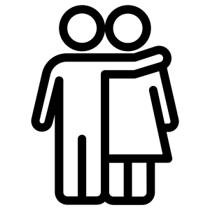
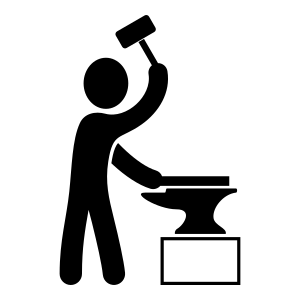

Rozdział 1 Do tańca

To są pisoenki do tańca
1.1 Hij is van mij, Kris Kross Amsterdam & Maan & Tabitha ft. Bizzey

Hij is van mij (Huisman et al. 2018)  On jest mój to luźny cover `The Boy Is Mine’ amerykańskiego duetu Brenda i Monica. W 2019 roku był najlepiej sprzedającym się singlem w Holandii.
On jest mój to luźny cover `The Boy Is Mine’ amerykańskiego duetu Brenda i Monica. W 2019 roku był najlepiej sprzedającym się singlem w Holandii.
Voor het eerst in m’n leven
Kan ik iemand alles geven
Ik voel me veiliger bij je
Ja, hij heeft alles wat ik zoek
Ik hou ‘m extra dicht bij me
Want al die meiden die kijken
Maar hij geeft me geen twijfel
Po raz pierwszy w moim życiu
Mogę komuś oddać wszystko
Przy tobie czuję się bezpieczniej
Tak, on ma wszystko, czego szukam
Trzymam go bardzo blisko przy sobie
Przez te wszystkie dziewczyny, które się patrzą
Ale on nie pozwala mi wątpić
- Wat ik met hem wil begrijp jij niet
- Verspil je tijd niet langer, alsjeblieft
- Jij bent in de war, hij hoort bij mij
- Dat is niet wat hij zei tegen mij
- Nie rozumiesz, czego chcę z nim
- Nie marnuj więcej czasu, proszę cię
- Gubisz się, on należy do mnie
- To nie jest to, co on mi powiedział
Hij is van mij
Hij zegt dat ik alles voor hem ben
Dat ik hem het allerbeste ken
Dat hij aan mij denkt op elk moment
Hij is van mij
Het maakt niet uit wat je van mij dacht
Meisje, weet je niet dat ‘ie op mij wacht?
Ik doe hem het beste elke nacht
Hij is van mij
On jest mój
On mówi, że jestem dla niego wszystkim
Że znam go najlepiej
Że myśli o mnie w każdej chwili
On jest mój
To nie ma znaczenia, co o mnie myślisz
Dziewczyno, czy nie wiesz że on na mnie czeka?
Robię mu to najlepiej każdej nocy
On jest mój
Hij is het voor mij, geen andere heeft het
Hoe hij mij voelt kan niemand beter
Hij neemt me voorbij, beter weten
Hij heeft m’n naakt, ik zeg het elke dag
Ik zeg het elke dag
On jest dla mnie tym kimś, żadna inna tego nie ma
Jak on mnie wyczuwa nie potrafi nikt więcej
On bierze mnie do końca, lepiej wiedzieć
On ma moje nagie, mówię że codziennie
Mówię że codziennie
Ey, je zeurt aan m’n hoofd, mama
Kijk me in m’n ogen aan
Als je mij niet gelooft, mama (Ey, ey, ey)
Wat betekent dit dan allemaal?
Ik vind het moeilijk om te zeggen hoe het voelt
Dat er niks anders is wat ik mis, nee
Hej, marudzisz mi nad głową, mała
Spójrz mi w oczy
Skoro mi nie wierzysz, mała (Hej, hej, hej)
Co zatem znaczy to wszystko?
Trudno mi powiedzieć, jak to jest
Że nie brakuje mi niczego więcej, nie
Jou beschermen, dat is mijn doel
Courtois op die bitch, ik mis niks
Ik hou van make-up seks, maar dit gaat te ver, uh
We don’t need to go there (Ooh)
You don’t wanna go there
Bronić ją, to jest mój cel
Courtois na tę sukę, nic nie przepuszczę
Kocham uprawiać seks, ale to idzie za daleko, uch
Nie musimy tam iść (Ooch)
Nie chcesz tam iść
- Maan, hij is van mij, niet van jou maar van mij, oh
- Tabitha hij is van mij, alleen van mij
- Maan, on jest mój, nie twój, ale mój, och
- Tabitha, on jest mój, tylko mój

- Je zou beter moeten weten. Powinieneś wiedzieć lepiej.
- Neem vrij tot dit voorbij is. Weź wolne dopóki to się nie skończy.
- Kan ik je wat water geven? Czy mogę ci podać trochę wody?
- Ik voel me gevleid. Schlebiasz mi.
- Ik voel me moe. Czuję się zmęczony.
- Ik wil met je meegaan. Chcę iść z tobą.
- Ik ben in de war. Gubię się.
- Thibaut Nicolas Marc Courtois is een Belgische voetballer die dienstdoet als doelman. Thibaut Nicolas Marc Courtois to belgijski piłkarz grający w drużynie jako bramkarz.
1.2 Links en rechts, Nick & Simon

Ik wil naar links, jij gaat naar rechts
Dus loop ik jou weer achterna
Ik wil vooruit, jij achteruit
Maar we komen toch weer bij elkaar
Ja chcę w lewo, ty idziesz w prawo
Dlatego znów chodzę za tobą
Ja chcę do przodu, ty z powrotem
Mimo to znów tak się spotykamy
Met jou weet ik nooit waar ik aan toe ben
Met jou weet ik nooit precies wat jij bedoelt
Maar wat ik zeker weet en wat ik niet meer vergeet
Dat is dat jij hetzelfde voor mij voelt
Z tobą nigdy nie wiem, na czym stoję
Z tobą nigdy nie wiem dokładnie, co masz na myśli
Ale to, co wiem na pewno i czego nigdy nie zapomnę
Jest to, że ty wobec mnie czujesz to samo
Ik wordt een beetje moe van al dat wachten
Ik wordt een beetje moe van, we zien wel hoe het gaat
Wanneer hebben wij een keer alles uitgepraat
Dat jouw neus dezelfde kant op staat
Zaczynam być trochę zmęczony całym tym czekaniem
Zaczynam być tym trochę zmęczony, zobaczymy co z tego wyjdzie
Kiedy wszystko wyjaśnimy raz na dobre
Twoja głowa obróci się w tą samą stronę
Ik zeg ja en jij zegt nee
Jij gaat altijd je eigen weg
Maar op die weg is plaats voor twee
Onthoudt dus goed wat ik je zeg
Ja mówię tak, ty mówisz nie
Zawsze idziesz własną drogą
Ale na tej drodze jest miejsce dla dwojga
Zapamiętaj dobrze, co do ciebie mówię
- Ze zullen je als ’n hond achterna zitten. Będą cię ścigać jak psa.
- We kennen elkaar niet. My się nie znamy.
- Weet je, we zien wel. Wiesz co, zobaczymy.
- Ik wil nog één keer alles nakijken. Chcę wszystko jeszcze raz sprawdzić.
- Welke kant is het strand op? W którą stronę jest plaża?
- Oké, goed dat we dit uitgepraat hebben. Okej, dobrze że mamy to wyjaśnione.
- Met een bijdrage van 3 euro per neus kan iedereen overigens de actie steunen. Każdy może wesprzeć akcję wkładem w wysokości 3 euro na głowę.
- Wanneer wij alles hebben gedaan, dan gaan wij een biertje drinken. Kiedy wszystko zrobimy, napijemy się piwa.
1.3 Suzanne, VOF de Kunst

Suzanne (Lancee 1983) Suzanne to piosenka z największą liczbą coverów wykonanych w innych językach. Michał Wiśniewski napisał polskie słowa do jego piosenki Zuzanna, dość odległe od oryginału.
We zitten samen in de kamer
En de stereo staat zacht
En ik denk nu gaat ’t gebeuren
Hierop heb ik zo lang gewacht
Niemand in huis de deur op slot
Mijn avond kan niet meer kapot
Siedzimy sobie w pokoju
A stereo cicho gra
I myślę sobie, teraz będzie się działo
Czekałem na to tak długo
Nikogo nie ma w domu, drzwi są zamknięte
Tego wieczoru już nic mi nie zepsuje
Suzanne, Suzanne
Suzanne, ik ben stapelgek op jou
Suzanne, Suzanne
Suzanne, szaleję za tobą
Ik leg mijn arm om haar schouders
Streel haar zachtjes door haar haar
Ik kan het bijna niet geloven
Voorzichtig kussen wij elkaar
En opeens gaat de telefoon
En een vriendelijke stem
Kładę rękę na jej ramionach
Łagodnie głaszczę ją po włosach
Prawie nie mogę w to uwierzyć
Całujemy się ostrożnie
I nagle dzwoni telefon
A przyjacielski głos
Aan de andere kant van de lijn
Verontschuldigt zich voor
’t Verkeerd verbonden zijn
En ik denk bij mezelf:
Waarom nu, waarom ik
Waarom
Po drugiej stronie linii
Tłumaczy, że
Się źle połączył
I myślę sobie:
Dlaczego teraz, dlaczego ja
Dlaczego
’k Ga maar weer opnieuw beginnen
Zoen haar teder in haar nek
Maar de hartstocht is verdwenen
En ze reageert zo gek
Ze vraagt of er nog cola is
En ik denk: nu is het mis
Zaczynam od początku jeszcze raz
Całuję ją czule w kark
Lecz namiętność już prysła
A ona reaguje tak szalona
Pyta, czy nadal jest cola
A ja myślę: teraz jest źle
We zitten nog steeds in de kamer
Met de stereo op tien
’t Zal nu wel niet meer gebeuren
Dus ik hou het voor gezien
Ze zegt: ik denk dat ik maar ga
Ze zegt: tot ziens en ik zeg: ja
Nadal siedzimy sobie w pokoju
Ze stereo na dziesięć
Teraz już pewnie nic nie będzie się działo
Więc się poddaję
Ona mówi: myślę, że już pójdę
Ona mówi: no to na razie, a ja mówię: no tak
- Wij zitten in hetzelfde schuitje. Jedziemy na tym samych wózku. (dosł. Siedzimy w tej samej łódce.)
- De wasmachine is kapot. Pralka jest zepsuta.
- Je verontschuldigt je nu bij je moeder. Teraz tłumacz się swojej matce.
- Marek, begrijp me niet verkeerd. Marek, nie zrozum mnie źle
- Dat soort religieuze hartstocht is niets voor mij. Ten rodzaj religijnej pasji jest nie dla mnie.
- Gewoon verdwijnen, jij en ik. Po prostu znikajmy, ty i ja.
- Oké… ik hou het voor me. Okej, zatrzymam to dla siebie.
1.4 ’t Smidje, Laïs

’t Smidje (Trad., n.d.) Młody kowal to stara flamandzka piosenka, która stała się popularna w 1998 roku w Hiszpanii i Polsce dzięki grupie Laïs. Stara pisownia z 1848 roku.
Wie wilt hooren een historie
Al van eenen jongen smid
Die verbrand had zijn memorie
Daeglijks by het vuer verhit
Kloppende, kloppende met zijnen hamer
Kloppende, kloppende met geweld op zijn aembeld
Kto posłuchać chce historii
O pewnym młodym kowalu
Który wypalił swoją pamięć
Codziennie rozgrzewaną przez ogień
Walił, walił swoim młotem
Walił z całej siły w swoje kowadło
’k Geef den bras van alle het smeden
Ik ga naer den franschen zwier
’k Wil my tot de trouw begeven
’g Hebt nooit schooner vrouw gezien
Nimmer meer, nimmer meer met mijnen hamer
Nimmer meer, nimmer meer met geweld op mijn aembeld
Rzucam całe to kowalstwo
Jadę na francuskie ?salony?
Chcę ?udać się? przed ślubem
Nikt nie widział piękniejszej kobiety
Nigdy więcej, nigdy więcej moim młotem
Nigdy więcej z całej siły w moje kowadło
’t Is de schoonste van de vrouwen
Maer nooit was er zoo ’n serpent
Nooit kan zy heur bakkes houên
Nooit is zy eens wel content
Was ik nog, was ik nog met mijnen hamer,
Was ik nog, was ik nog met geweld op mijn aembeld
Jest najpiękniejsza z wszystkich kobiet
Ale nigdy nie było takiej żmii
Nigdy nie może się przymknąć
Nigdy nie jest zadowolona
Czyżbym znowu, czyżbym znowu moim młotem
Czyżbym znowu z całej siły w moje kowadło
Nooit mag ik een pintje drinken
Nooit mag ik eens vrolijk zijn
Nooit kan ik iemand beschinken
Met een glaesje bier of wijn
Was ik nog, enz.
Nigdy nie mogę ćwiartki się napić
Nigdy nie mogę się trochę zabawić
Nigdy nie mogę kogoś poczęstować
Szklanką piwa lub wina
Czyżbym znowu, itd.
Wordt er somtijds eens gewasschen
Dan moet ik het kind gaê slaen
Dan moet ik op ’t eten passen
Zeep en styfsel halen aen
Was ik nog, enz.
Jak jest czasem coś do prania
To muszę usypiać dziecko
Potem muszę zająć się jedzeniem
Mydło i krochmal przyciągnąć
Czyżbym znowu, itd.
Aen de wieg moet zijn gezongen
Alles dient tot mijn verdriet
Anders greist de kleine jongen
Of ik moet zingen een lied
Was ik nog, enz.
Nad kołyską musi być zaśpiewane
Wszystko w służbie mojemu smutkowi
Inaczej ?greist? ten mały chłopiec
Albo muszę śpiewać piosenkę
Czyżbym znowu, itd.
’k Geef den bras van al het trouwen
Wierd ik maer eens weeuwenaer
’k Zou my in een hoeksken houên
En my stellen uit gevaer
Was ik nog, enz.
Rzucam całe to małżeństwo
Gdybym tak kiedyś został wdowcem
Skryłbym się w jakimś kąciku
I ?wydostałbym? z zagrożenia
Czyżbym znowu, itd.
- Als het monster verhit wordt, stijgt de dampspanning. Po podgrzaniu próbki wzrasta ciśnienie pary.
- Adam zat ook voor huiselijk geweld. Adam siedział też za przemoc domową.
- Ergens de brui aan geven. Porzucić coś.
- Hij gaat aan de zwier met Tomek. Idzie z Tomkiem włóczyć się po knajpach.
- Ik moet zich naar huis ter rusten begeven. Muszę udać się do domu na odpoczynek.
- Werd ik maar zo gekust. Gdybym tylko był tak pocałowany. (Gdyby tylko ktoś mnie tak pocałował.)
- In het Vlaams betekent “schoon” mooi. Po flamandzku „schoon” znaczy piękny.
- Misschien niet nu, maar eens wel. Może nie teraz, ale kiedyś chętnie.
- Zijn bakkes vangt vliegen. Dostaje strzała w ryj.
- Hou je bakkes. Zamknij się.
- Jongeren bevrijden zich uit allerlei keurslijven. Młodzi ludzie uwalniają się od wszelkiego rodzaju kaftanów bezpieczeństwa.
References
Huisman, Jordy, Sander Huisman, Yuki Kempees, Maan de Steenwinkel, Tabitha Foen-a-foe, Leonardo Roelandschap, Bas van Daalen, Robin Francesco, and Joren van der Voort. 2018. Hij Is van Mij. https://youtu.be/EYhLEHE1vfQ.
Lancee, Ferdi. 1983. Suzanne. https://youtu.be/jgiPEsgkhKk.
Schilder, Nick. 2007. Links En Rechts. https://youtu.be/miac8oRrEcI.
Trad. n.d. ’T Smidje. https://youtu.be/mJ6vmtFBlWY.